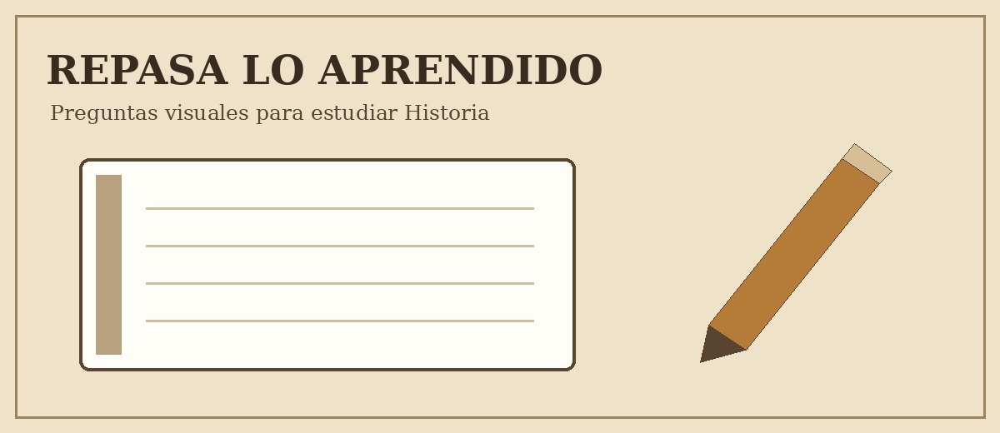

Ejercicios de Historia
Lee las preguntas y observa las opciones para repasar lo aprendido.

1. En que año comenzo la Independencia de Mexico?
A) 1810
B) 1821
C) 1910
2. Cual fue la capital del Imperio mexica?
A) Palenque
B) Mexico-Tenochtitlan
C) Monte Alban
3. Que acontecimiento se recuerda el 20 de noviembre de 1910?
A) La conquista de Mexico
B) La Independencia
C) El inicio de la Revolucion Mexicana
4. Que civilizacion construyo las piramides de Guiza?
A) Egipcia
B) Romana
C) Mexica
5. En que año se consumo la Independencia de Mexico?
A) 1492
B) 1821
C) 1917